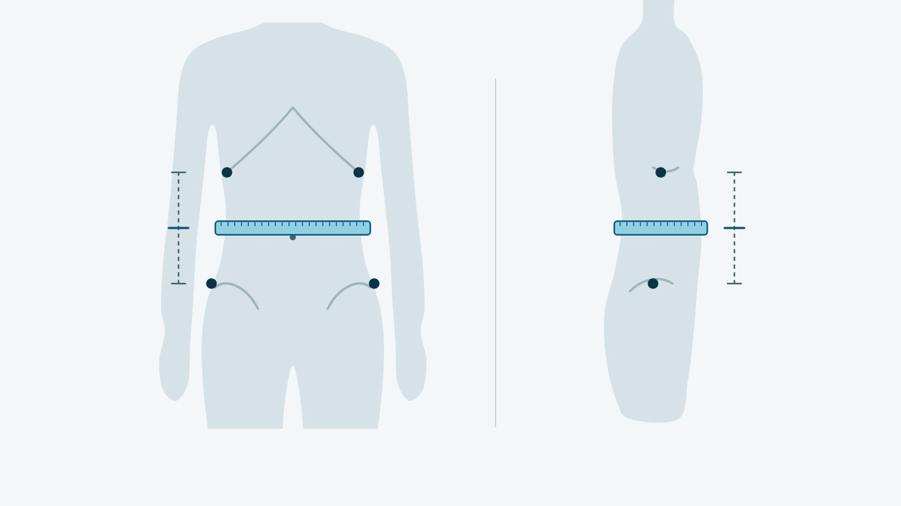

Інструмент
Калькулятор ІМТ і співвідношення талії до зросту
Розрахуйте індекс маси тіла за 10 секунд і отримайте орієнтовну рекомендацію перед консультацією в Avelis Clinic.
- ВООЗ
- NICE NG246
- IDF
Avelis Clinic · Калькулятор
Індекс маси тіла
Ваш ІМТ
—
Як користуватися калькулятором
Калькулятор ІМТ рахує два показники. Індекс маси тіла (ІМТ) дорівнює вазі в кілограмах, поділеній на квадрат зросту в метрах, і за ним ВООЗ оцінює масу тіла. Співвідношення талії до зросту (обхват талії, поділений на зріст) NICE NG246 (2025) радить вимірювати разом з ІМТ у дорослих з ІМТ до 35: воно показує надлишок жиру на животі, з яким пов'язаний ризик діабету 2 типу, гіпертензії і серцево-судинних хвороб.
Щоб розрахувати ІМТ і співвідношення талії і зросту, введіть стать, зріст, вагу і обхват талії, виміряний за інструкцією нижче. Приклад ВООЗ: 70 кг ÷ 1,75² = 22,9. Приклад NICE: талія 96,5 см ÷ зріст 170 см = 0,57.
Категорії ІМТ для дорослих (ВООЗ):
| ІМТ, кг/м² | Категорія |
|---|---|
| менше 18,5 | недостатня маса тіла |
| 18,5–24,9 | нормальна маса тіла |
| 25,0–29,9 | надлишкова маса (передожиріння) |
| 30,0–34,9 | ожиріння I ступеня |
| 35,0–39,9 | ожиріння II ступеня |
| 40 і більше | ожиріння III ступеня |
Співвідношення талії до зросту (NICE NG246):
| Співвідношення | Що означає |
|---|---|
| 0,40–0,49 | здоровий рівень жиру на животі, ризики не підвищені |
| 0,50–0,59 | надлишок жиру на животі, ризики для здоров'я підвищені |
| 0,60 і більше | значний надлишок жиру на животі, ризики ще вищі |
NICE формулює просте правило: тримайте талію меншою за половину зросту. Пороги однакові для чоловіків і жінок, усіх етнічних груп і людей з великою м'язовою масою, але лише за ІМТ до 35. Для значень менше 0,40 NICE окремої категорії не задає.
Що означає ваш результат: 4 сценарії
Разом два показники кажуть більше, ніж кожен окремо. Сценарії нижче стосуються дорослих з ІМТ до 35: за вищого ІМТ співвідношення талії до зросту не використовують, а за ІМТ понад 40 комісія The Lancet Diabetes & Endocrinology (2025) вважає надлишок жиру підтвердженим без додаткових вимірювань.
Обидва показники в нормі
ІМТ 18,5–24,9 відповідає нормі за ВООЗ, а співвідношення 0,40–0,49 за NICE означає, що ризики не підвищені. Мета — зберегти вагу і талію, а не схуднути.
ІМТ у нормі, талія — ні
ІМТ 18,5–24,9, але співвідношення 0,50 або більше. NICE попереджає, що людина з нормальним ІМТ може мати надлишок жиру на животі, тож «норму» треба тлумачити обережно. Ризики діабету 2 типу, гіпертензії і серцево-судинних хвороб у такому разі підвищені; обговоріть з лікарем, які обстеження потрібні.
ІМТ підвищений, талія в нормі
ІМТ 25,0–34,9, а співвідношення 0,40–0,49. Так буває, зокрема, у людей з великою м'язовою масою: їхній ІМТ NICE радить тлумачити обережно, а співвідношення талії до зросту для них придатне. За критеріями комісії Lancet, нормальне співвідношення надлишку жиру не підтверджує, але його можна підтвердити іншим вимірюванням. Якщо ІМТ 30–34,9, за ВООЗ це вже ожиріння I ступеня, і план варто обговорити з лікарем.
Обидва показники підвищені
ІМТ 25 і більше та співвідношення 0,50 і більше. У такому разі NHS радить звернутися до лікаря, а EASO (2024) включає таких людей у визначення ожиріння, якщо є медичні, функціональні чи психологічні ускладнення. Лікар оцінить, чи вплинула вага на роботу органів і щоденне життя, тобто чи йдеться вже про клінічне ожиріння за критеріями комісії Lancet.
Чому ІМТ буває оманливим
ІМТ не розрізняє жир і м'язи і не показує, де розташований жир. Комісія Lancet радить використовувати його для скринінгу і популяційних оцінок, а не як окрему мірку здоров'я конкретної людини.
- Велика м'язова маса. NICE радить обережно тлумачити ІМТ у людей з розвиненими м'язами: високий індекс у них може не означати надлишку жиру.
- Вік 65 і більше. NICE радить враховувати супутні хвороби, фізичну функцію і можливий захисний ефект трохи вищого ІМТ у старшому віці.
- Етнічне походження. У людей південноазійського, китайського, іншого азійського, близькосхідного, чорношкірого африканського чи афро-карибського походження ризики для серця й обміну речовин зростають за нижчого ІМТ. NICE радить для них вважати надлишковою масою ІМТ 23–27,4, а ожирінням ІМТ від 27,5.
- Розумні ваги. Біоімпеданс (оцінка складу тіла слабким струмом) не замінює ІМТ як міру загальної кількості жиру в дорослих (NICE NG246).
Обхват талії: як правильно виміряти
Протоколи ВООЗ (2008) і NICE NG246 описують вимірювання так:
- Станьте рівно, ноги разом, руки вздовж тіла, вага рівномірно на обох ногах; одягу має бути мінімум.
- Знайдіть збоку нижній край останнього ребра і верхній край тазової кістки.
- Обведіть стрічку посередині між цими точками: зазвичай це трохи вище пупка.
- Використовуйте нерозтяжну стрічку і не затягуйте її.
- Розслабтеся і запишіть результат наприкінці звичайного видиху, не втягуючи живіт.
- Виміряйте двічі: якщо різниця до 1 см, візьміть середнє, якщо більша, повторіть обидва вимірювання.
- Поділіть обхват талії на зріст в однакових одиницях, наприклад у сантиметрах.

Норма обхвату талії. Для європейців IDF (2006) вважає ознакою надлишку жиру на животі (за термінологією IDF, центрального ожиріння) талію 94 см і більше в чоловіків і 80 см і більше в жінок. У звіті ВООЗ (2008) понад 102 см у чоловіків і понад 88 см у жінок означають суттєво підвищений ризик, хоча ВООЗ зазначає, що ці значення були прикладом, а не її рекомендацією. Вимірювання на рівні пупка може занижувати обхват, тому щоразу вимірюйте в тій самій точці.
Таблиця ваги за зростом 150–195 см
Межі пораховано так само, як рахує калькулятор: ІМТ = вага ÷ зріст² (зріст у метрах), округлений до 0,1, а категорію визначає саме округлене значення. Тому, наприклад, 53,4 кг при зрості 170 см дають ІМТ 18,5 і вже належать до норми.
| Зріст, см | Норма ваги за зростом, кг | Надлишкова маса, кг | Ожиріння, кг |
|---|---|---|---|
| 150 | 41,6–56,1 | 56,2–67,3 | від 67,4 |
| 155 | 44,4–59,9 | 60,0–71,9 | від 72,0 |
| 160 | 47,3–63,8 | 63,9–76,6 | від 76,7 |
| 165 | 50,3–67,9 | 68,0–81,5 | від 81,6 |
| 170 | 53,4–72,1 | 72,2–86,5 | від 86,6 |
| 175 | 56,6–76,4 | 76,5–91,7 | від 91,8 |
| 180 | 59,8–80,8 | 80,9–97,0 | від 97,1 |
| 185 | 63,2–85,3 | 85,4–102,5 | від 102,6 |
| 190 | 66,7–90,0 | 90,1–108,1 | від 108,2 |
| 195 | 70,2–94,8 | 94,9–113,8 | від 113,9 |
Таблиця не враховує м'язову масу, вік 65+ і нижчі пороги для окремих етнічних груп, описані вище.
Результат вище норми: наступні кроки
ВООЗ визначає ожиріння як хронічну хворобу, а EASO (2024) радить оцінювати успіх лікування не лише вагою, а й тим, як змінюються ускладнення, самопочуття і якість життя. Що можна зробити далі:
- почніть із плану першого тижня в статті як почати схуднення;
- пройдіть тест на схуднення: він врахує талію і супутні стани та запропонує один із трьох маршрутів;
- зверніться до ендокринолога, якщо ІМТ 30 або вище, якщо ІМТ 25 або вище разом із талією від половини зросту або якщо є діабет 2 типу, підвищений тиск чи апное сну;
- перед прийомом прочитайте статтю підготовка до консультації ендокринолога, а про варіанти лікування — сторінку лікування ожиріння.
Часті запитання
Чи точний ІМТ?
Формула проста і точна, але сам ІМТ лише приблизно відображає кількість жиру: він не розрізняє жир і м'язи і не показує, де жир розташований. Комісія Lancet радить використовувати ІМТ для скринінгу, а не як окрему мірку здоров'я людини, тому NICE радить дорослим з ІМТ до 35 вимірювати ще й співвідношення талії до зросту.
Яка норма ІМТ після 60?
Окремої норми для старшого віку ні ВООЗ, ні NICE не встановлюють: класифікація та сама. З 65 років NICE радить тлумачити ІМТ обережно, з урахуванням хвороб, фізичної функції і можливого захисного ефекту трохи вищого ІМТ. Рішення про схуднення в цьому віці краще ухвалювати разом з лікарем.
Чи підходить калькулятор для дітей?
Ні. У дітей і підлітків співвідношення ваги і зросту змінюється з віком, тому ВООЗ оцінює їх за ІМТ для віку і статі, а NICE за центильними кривими. Пороги співвідношення талії до зросту NICE застосовує з 5 років, але вагу дитини оцінює педіатр.
Що таке ожиріння 1 ступеня?
Це ІМТ 30,0–34,9 за класифікацією ВООЗ; для людей з етнічних груп, перелічених вище, NICE радить вважати ожирінням ІМТ від 27,5. ВООЗ визначає ожиріння як хронічну хворобу. Чи впливає воно вже на органи і щоденне життя, тобто чи є клінічне ожиріння за критеріями комісії Lancet, оцінює лікар.
Джерела
- WHO. Obesity and overweight. Fact sheet, 2026. https://www.who.int/news-room/fact-sheets/detail/obesity-and-overweight
- WHO Regional Office for Europe. A healthy lifestyle: WHO recommendations (архівна копія 29.12.2024). https://web.archive.org/web/20241229133955/https://www.who.int/europe/news-room/fact-sheets/item/a-healthy-lifestyle---who-recommendations
- NICE. Overweight and obesity management (NG246), 2025. https://www.nice.org.uk/guidance/ng246/chapter/Identifying-and-assessing-overweight-obesity-and-central-adiposity
- WHO. Waist circumference and waist–hip ratio: report of a WHO expert consultation, 2008 (опубл. 2011). https://iris.who.int/handle/10665/44583
- International Diabetes Federation. The IDF consensus worldwide definition of the metabolic syndrome, 2006. https://idf.org/media/uploads/2023/05/attachments-30.pdf
- NHS. Overweight and obesity in adults (reviewed 29 April 2026). https://www.nhs.uk/conditions/overweight-and-obesity/
- Rubino F et al. Definition and diagnostic criteria of clinical obesity. Lancet Diabetes Endocrinol, 2025. https://doi.org/10.1016/S2213-8587(24)00316-4
- Busetto L, Dicker D, Frühbeck G et al. A new framework for the diagnosis, staging and management of obesity in adults. Nat Med, 2024. https://doi.org/10.1038/s41591-024-03095-3
Матеріал має інформаційний характер і не замінює консультацію лікаря. Препарати призначає лікар після консультації.